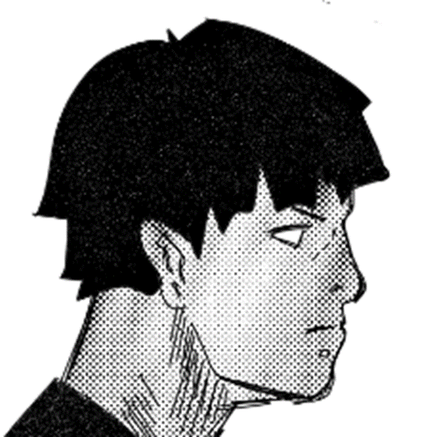

About Me

Jag är Alex Skutberg, en 19-årig konstnär och teknikentusiast som bor i Östersund, Sverige. Min
passion för konst och kreativitet har alltid varit en stor del av mitt liv, och jag spenderar
mycket tid med att rita och skapa vackra bilder.
Utöver min konstnärliga sida har jag ett starkt intresse för bilkörning och programmering. Att
utforska nya tekniska lösningar är en utmaning som jag alltid är redo att ta mig an. Det var
därför jag valde att studera teknik på Storsjögymnasiet.
När jag inte ritar eller arbetar med mina programmeringsprojekt, älskar jag att köra min bil och
upptäcka nya platser. Det är en av mina största passioner, och jag älskar känslan av frihet som
det ger mig.
Jag bor tillsammans med min fyrbenta följeslagare, min hund Fjodor. Vi njuter av att utforska
naturen runt Östersund tillsammans och uppleva allt det har att erbjuda. Jag har stora
framtidsplaner och ser fram emot alla spännande äventyr som ligger framför mig.
Projects
-

Bean Hunt / Web Comic
Här är mig egengjorde serietidning med en egen programerad hemsida.
-
FruktMaskinen
Här är en hemsida där du får välja frukter!
-
FruktMaskinen
Här kan du generera några skämt jag hämtat via en databas!
-
Kolla ditt personnummer!
Här kan du kolla om ett personnummer är giltigt eller om det är falskt, datan är hämtad ifrån skatteverkets databas. VARNING, FINNS RISK FÖR EXTREMT LAGG NÄR DU KÖR PROGRAMMET!!!